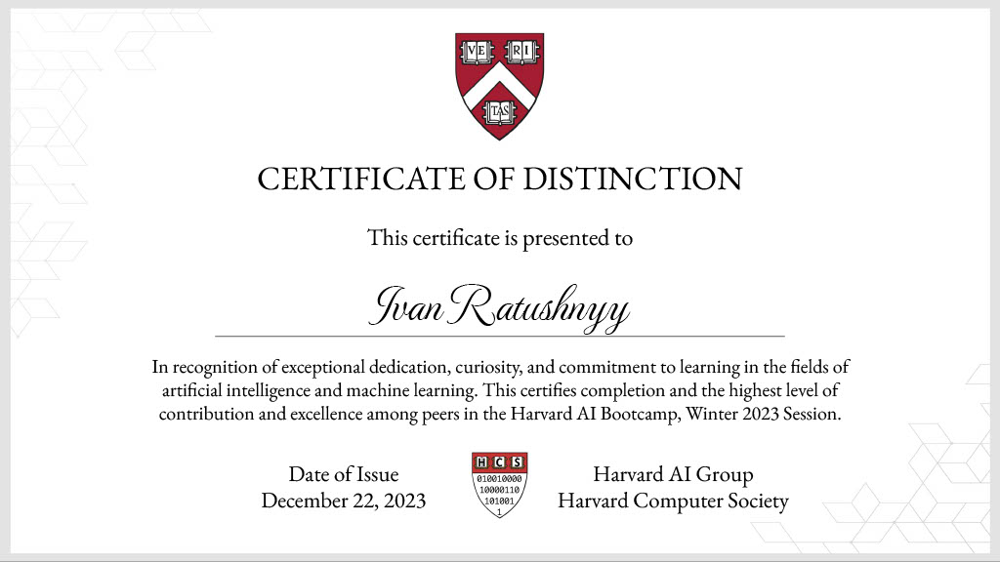
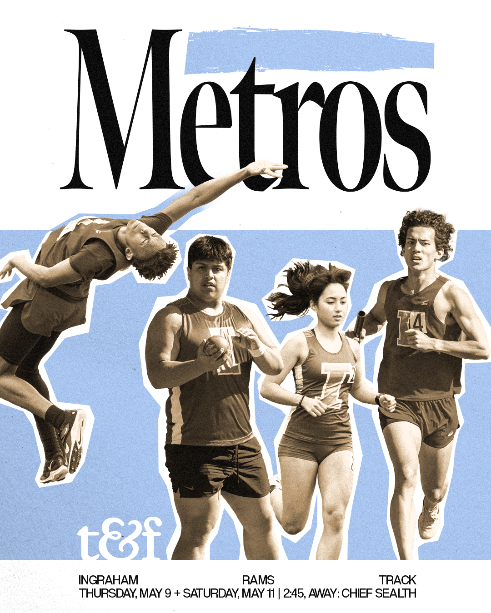
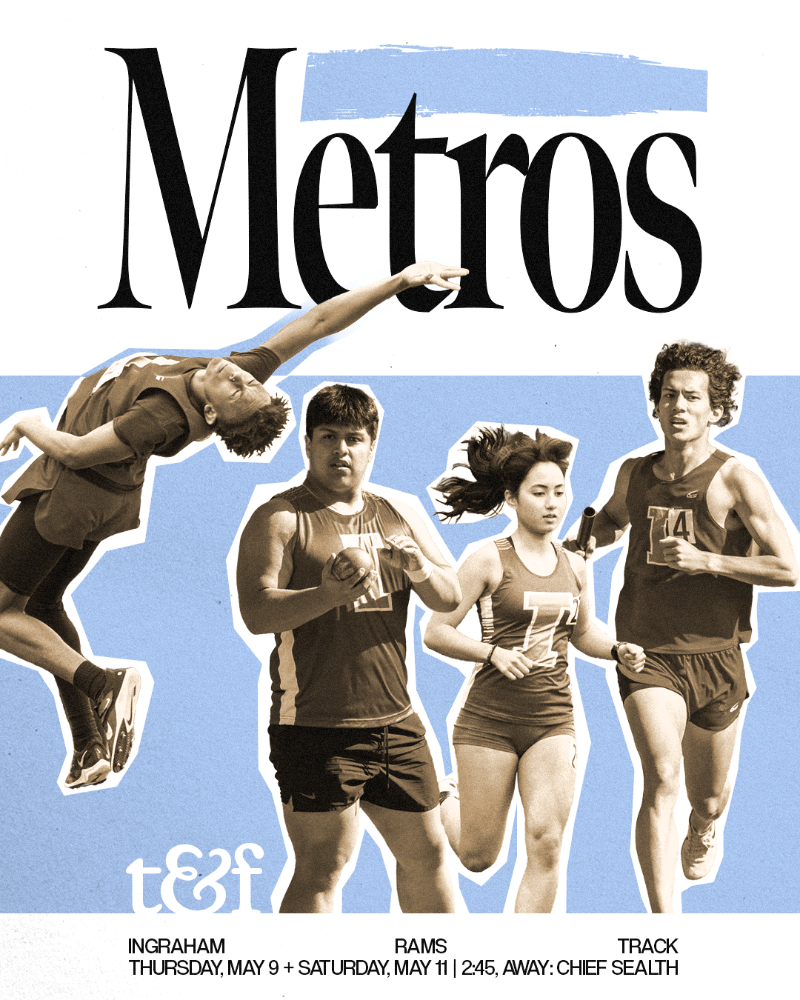

pAML Data Visualizations
Under the mentorship of professor Hamid Bolouri, I have developed a website that allows for the visualization and exploration of bulk RNA sequencing data from Pediatric Acute Myeloid Leukemia (pAML) patient samples. Visualizations were achieved through the multi-dimentionality reduction algorithms of: PHATE (Potential of Heat-diffusion for Affinity-based Trajectory Embedding), PCA (Principal Component Analysis), tSNE (t-distributed Stochastic Neighbor Embedding), and UMAP (Uniform Manifold Approximation and Projection). Cross filtering between visualizations was added to allow for comparitive analysis and pattern detection.
Read more about this project!
Oncoscape
Alongside a team at the Fred Hutchinson Cancer Research Center, I have worked on the Oncoscape project. Oncoscape is a web application that hosts an integrated suite of analysis tools for users to explore hypotheses related to molecular and clinical data in order to better understand cancer biology and treatment options. My work involved the creation of differential expression analysis on the backend as well as visualization methods to supplement the results of such analysis (heatmaps, volcano plots).
Programming
I am a self-taught programmer skilled in Lua, Java, Python, and JavaScript. Several projects helped me learn throughout the process, this includes a Sudoku generator and interface for a game in JavaFX, Tic Tac Toe and Hangman games, as well as Chess AI in Python, and various game prototypes in Unreal Engine, Unity, and Roblox. I have built dynamic websites, including this portfolio, demonstrating proficiency in web development. Additionally I have practiced algorithm solving on LeetCode, and completed courses with distinction, as with the selective Harvard AI Computer Society Course. I am always seeking to learn and master new technologies
Mathematics
I have actively participated in UW Math Hour Classes, Lectures, Olympiads, Volunteering, enriching my mathematical knowledge and problem-solving skills, as well as providing that opportunity for other children. These experiences have provided me with a solid foundation in advanced mathematical concepts and critical thinking, which I apply to my programming projects and algorithmic challenges.
Design
I have provided several clubs, sports, and activities at my school with informative graphics.

 



Clubs
I have myself participated in many school clubs, including: Mock Trial (where I was one of the first members, and the lead attorney at our first competition), Economy Club (which I helped form), Newspaper Club (helping fundrase at school events), JSA, Climbing Club.
Contact Me
Email: i.a.ratushny@gmail.com
Phone: (+1) 206-499-3789